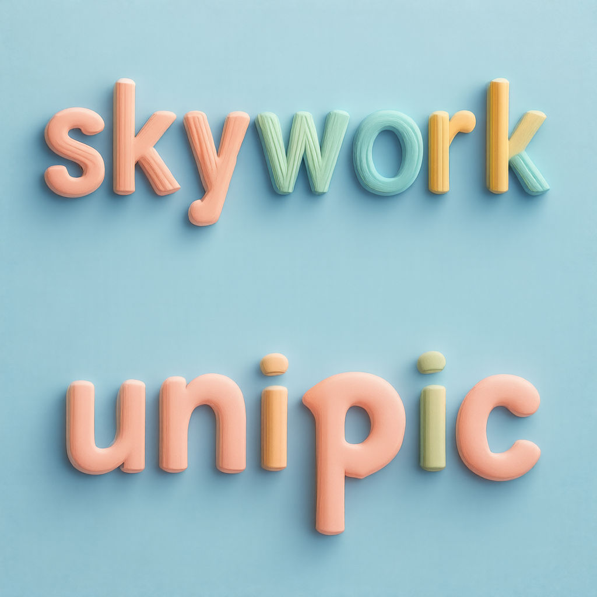
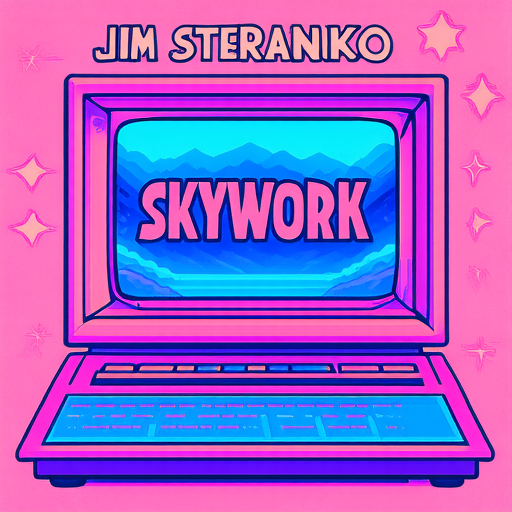
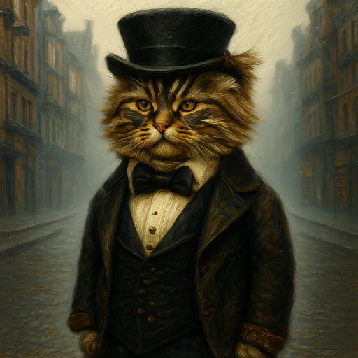
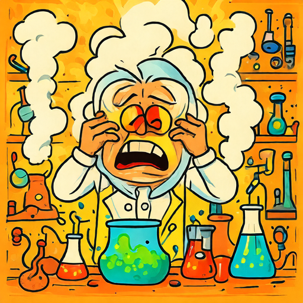

Abstract
Model Overview
Skywork UniPic 2.0 is a unified multimodal model that integrates understanding, generation, and editing. It is trained on a large-scale, high-quality image generation and editing dataset, and uses a progressive dual-task reinforcement strategy to enhance instruction following and editing consistency.
Performance Comparison
Benchmark Comparison
We compare the performance of UniPic2-SD3.5M-Kontext and UniPic2-Metaquery with the state-of-the-art models on the image generation and editing tasks.
| Type | Model | GenEval ↑ | DPG↑ | GEdit-En ↑ | ImgEdit ↑ | MMBench ↑ | MMMU ↑ | MM-Vet ↑ |
|---|---|---|---|---|---|---|---|---|
| Generation | SD3.5-Medium | 0.65 | 83.86 | x | x | x | x | x |
| Gen.& Edit. | FLUX.1-Kontext | - | - | 6.26 | 3.52 | x | x | x |
| Unified | BAGEL | 0.88 | 85.07 | 6.52 | 3.20 | 85.0 | 55.3 | 67.2 |
| Gen. & Edit. | UniPic2-SD3.5M-Kontext | 0.89 | 84.23 | 6.59 | 4.00 | x | x | x |
| Unified | UniPic2-Metaquery | 0.90 | 83.79 | 6.87 | 4.03 | 83.5 | 58.6 | 67.1 |
Generation and Editing Across Diverse Tasks
Text-to-Image Generation
Case 1: A tranquil pond with vibrant clear blue water, where three pristine white waterlilies float gracefully on the surface. Each waterlily has a perfectly formed shape with delicate petals radiating outwards from a yellow center. The smooth surface of the water reflects the sky above, enhancing the serenity of the scene, as gentle ripples emanate outward from the blossoms.
Case 2: A visually striking isometric design spells out the word 'skywork' and the second row spells 'unipic' using an array of artist pencils with softly rounded edges, demonstrating the principles of modular constructivism. Each pencil features a pastel color palette, blending harmoniously against a serene blue background. The entire composition benefits from soft, smooth lighting that accentuates the textures and forms, created with a physically based rendering technique that provides a realistic appearance, with the entire artwork centrally positioned within the frame, creating a trendy and aesthetically pleasing image.
Case 3: A vintage illustration of a retro computer where 'skywork' is in the screen, vaporwave aesthetic, in the style of Jim Steranko, light pink and light blue, Behance, fancy background.
Case 4: a cute cat dressed as a Victorian gentleman, standing in the foggy streets of Victorian London, fog, refractions, cinematic still, dynamic lighting, ultra detailed, intricate, realistic fur, oil painting, fine strokes, paint texture, textured canvas
Case 5:Create a humorous and vividly colored illustration of a cute mad scientist in his laboratory. The scientist, with an exaggerated comical expression, is preparing explosive solutions that emit lots of smoke. He is covering his ears and squeezing his eyes shut, no open eyes, anticipating a big explosion. The laboratory is filled with quirky scientific equipment and bubbling potions, enhancing the whimsical atmosphere. The overall mood should be light-hearted and funny, capturing the essence of a playful, cartoonish experiment gone awry. Use bright, lively colors to emphasize the humor and energy of the scene
Case 6:A photorealistic scene of cute miniature chefs in traditional white uniforms and hats, eagerly pouring melted chocolate generously onto one giant croissant. One chef stands on a ladder, holding a giant chocolate pot, carefully pours the chocolate onto the croissant, while the other chef spreads it evenly over the surface. They finish off with a sprinkling of beautiful red berries, and one chef finishes off with a sprinkling of powdered sugar. The background is a simple, monochromatic gray wallpaper.
Image Editing
Case 1: put the word 'skywork' on the metal kitten
Case 2: Make the person lower his right arm.
Case 3: change the word "dreamshot" to "skywork"
Case 4: Change the style of this image to Ice Age.


Case 5: Add a painting to the easel.
Multimodal Understanding
Acknowledgement
We would like to express our gratitude to:
- SD3.5-Medium for their strong base model
- Qwen2.5-VL for their strong vision-language model
- OpenUni for their simple unified multimodal framework
- Metauery for their excellent unified multimodal model
- Flow-GRPO for their RL training framework
We are grateful to the broader research community for their open exploration and contributions to the field of unified multimodal model.